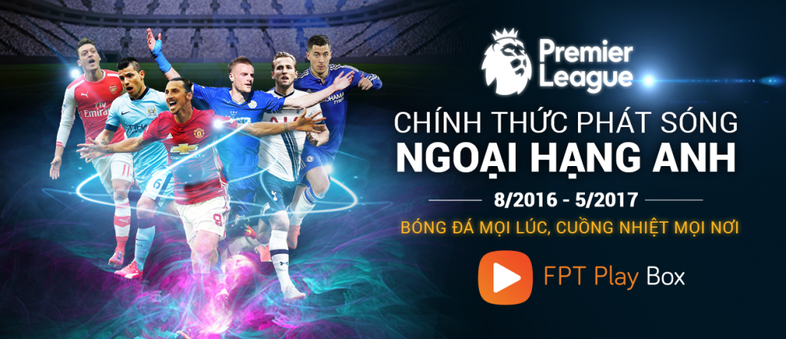
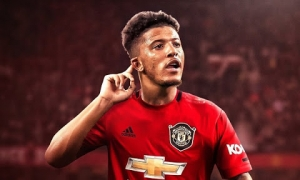
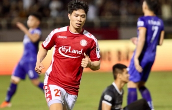
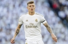
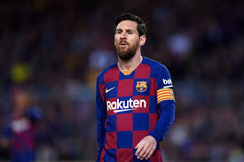

-

Jadon Sancho có khả năng sẽ trở thành tân binh thứ 2 của Manchester United trong mùa Hè năm nay
Báo chí Anh bất ngờ loan tin, Man United đã tạo được bước đột phá ở thương vụ này. Cụ thể, Man United chấp nhận chi 90 triệu bảng trả trước, cộng 18 triệu bảng để thuyết phục Dortmund nhả Sancho.Một khi hợp đồng hoàn tất, Sancho sẽ hưởng mức lương lên tới 250 nghìn bảng/tuần tại OldTrafford.
-

Công Phượng nổ súng,CLB TP.HCM nghẹt thở giành vé vào Bán kết
Và điều gì đến đã đến, phút 81, sau nỗ lực đi bóng của Công Phượng, anh chuyền vào giúp Huy Toàn có cơ hội sút bóng thoải mái, ghi bàn quân bình tỷ số 2-2. Kịch tính trận đấu đến ở phút thứ 90+4, Đỗ Văn Thuận có bàn thắng muộn giúp CLB TP.HCM hoàn tất cú lội ngược dòng nghẹt thở. Giành chiến thắng chung cuộc 3-2
-

Toni Kroos:Báu vật thành MADRID
Ở thời điểm hiện tại, dù đã bước sang tuổi 30, thế nhưng anh vẫn là một trong những trụ cột quan trọng bậc nhất trong đội hình của HLV Zinedine Zidane
-

Messi trở lại, tiếp tục khiêu chiến với chủ tịch Josep Bartomeu
Trong buổi phỏng vấn với Goal, thủ quân của Barca đã thẳng thừng chỉ trích chủ tịch Josep Bartomeu: “Tôi không hạnh phúc và tôi muốn ra đi. Nhưng tôi không thể thực hiện điều này bằng bất cứ cách nào, vì vậy tôi sẽ ở lại Barca để không vướng vào tranh chấp pháp lý. Câu lạc bộ do Bartomeu lãnh đạo là một thảm họa.